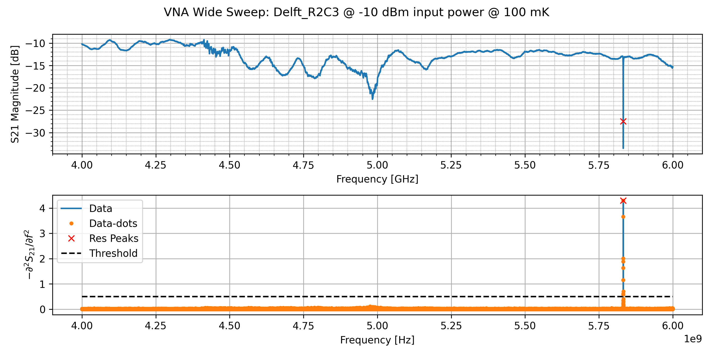
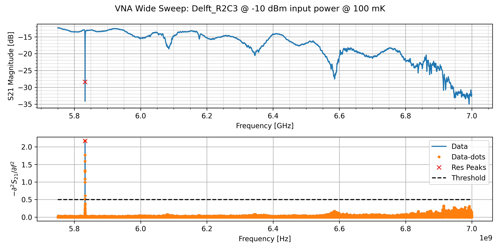
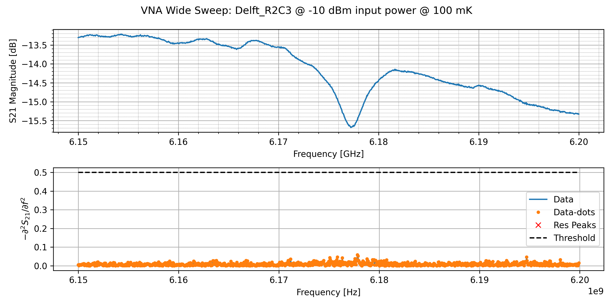

Wide Sweeps

Figure 2.1: Wide sweep from 4.0 to 6.0 GHz showing a resonator

Figure 2.2: Wide sweep from 5.75 to 7.0 GHz showing a resonator

Figure 2.3: Fine sweep from 6.15 to 6.20 GHz on what I thought was a resonator